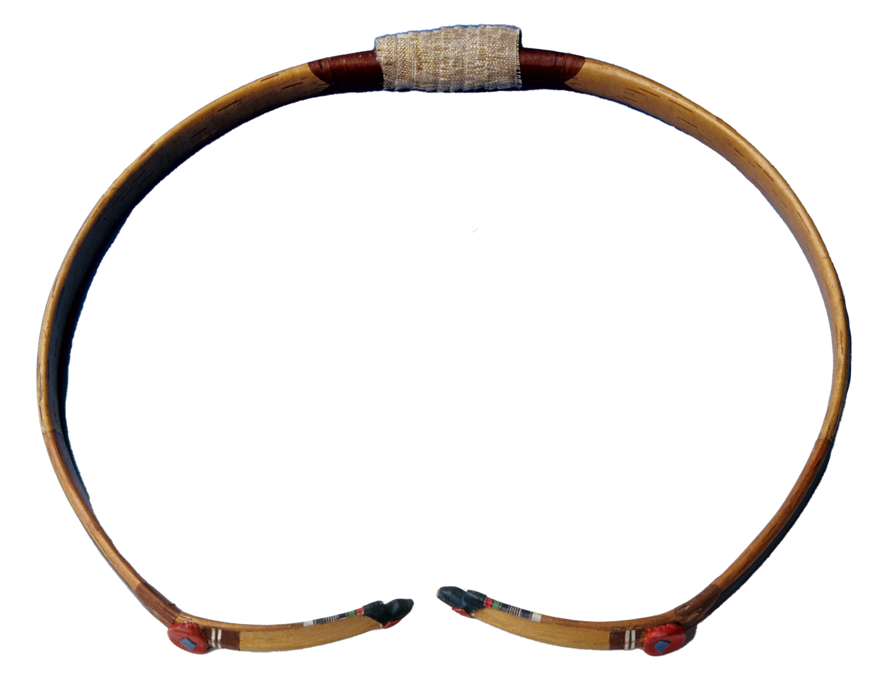

궁시장
활과 화살을 만드는 기능

제작과정
활짱의 손잡이 부분과 양끝에는 참나무와 뽕나무를 각각 대지만 탄력을 유지하기 위해 죽심(竹心)을 넣고 그 안팎에다 쇠뿔과 쇠심줄을 민어부레풀로 접착시킨다. 그러나 민어부레풀은 습기가 많고 기온이 높으면 잘 접착되지 않아 여름철에는 활을 만들지 않는다.
사용재료
활 만드는 재료는 대나무, 뽕나무, 물소뿔, 소의 심줄이 있다.
화살을 만드는 재료는 싸리나무, 대나무, 철, 심줄, 새의 깃, 도피, 아교 등이 주재료이며 계절에 관계없이 계속 만들 수 있다.
특징
한국의 활은 쇠뿔과 쇠심줄을 사용한 각궁(角弓)이란 점이 특징이며, 화살이 멀리 나가는 강궁(强弓)에 속한다. 제작시 오른손잡이는 우궁깃을 왼손잡이는 좌궁깃을 달아야 한다.
전승자
| 보유구분 | 이름 | 성별 | 기예능 | 지역 | 인정일 |
|---|---|---|---|---|---|
| 보유자 | 박호준(朴浩濬) | 남 | 시장 | 인천 | 2008-05-07 |
| 보유자 | 권영학(權寧鶴) | 남 | 활제작 | 경북 | 2015-05-27 |
| 보유자 | 유세현(劉世鉉) | 남 | 시장 | 경기 | 2022-10-11 |
| 보유자 | 김성락(金成洛) | 남 | 궁장 | 경북 | 2022-10-11 |
| 보유자 | 김윤경(金允炅) | 남 | 궁장 | 경기 | 2022-10-11 |
| 명예보유자 | 김종국(金鍾國) | 남 | 대구 | 2021-09-01 |
소재지
기타